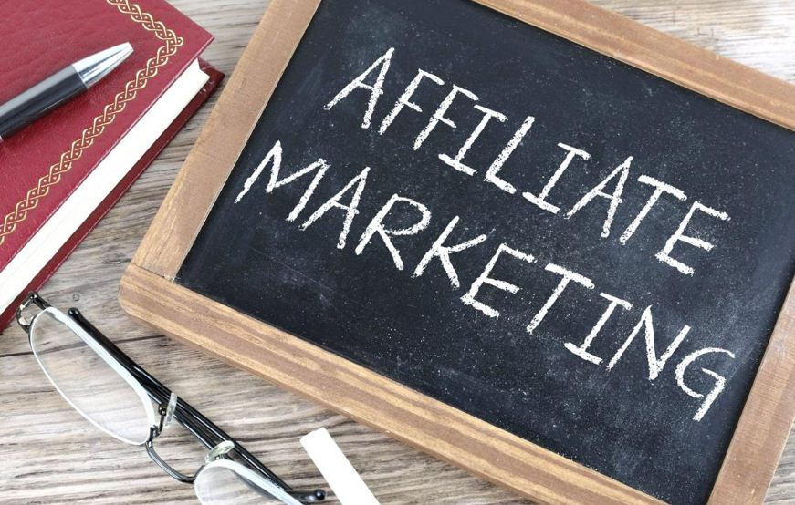
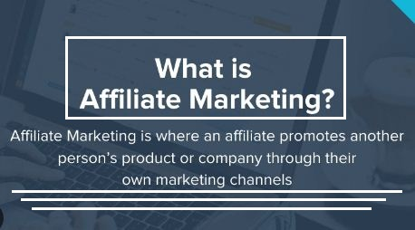
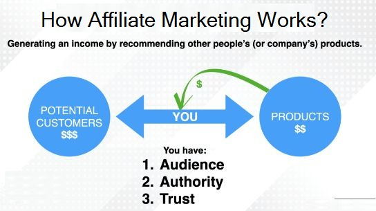
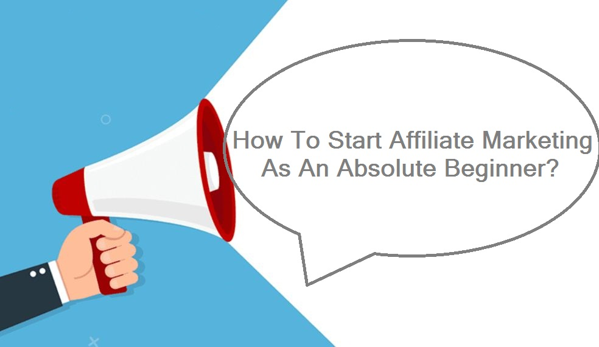
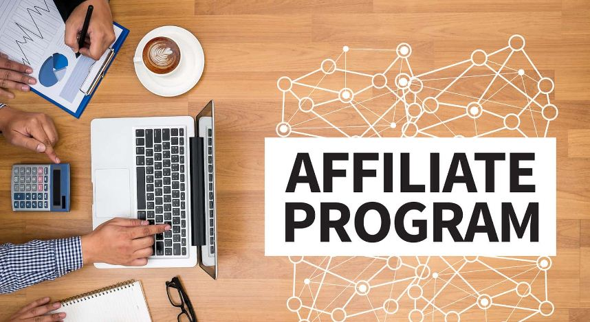
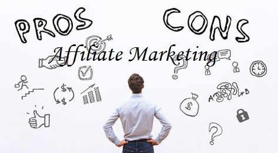

What is Affiliate Marketing? | How to Get Started?

As the famous saying goes, "Investing in yourself is the best investment you can make." With affiliate marketing, you can invest in your own success and build a profitable business that aligns with your passions and values. By promoting products and services that you truly believe in, you can establish a level of trust and authenticity with your audience, leading to higher conversion rates and greater earning potential.
Affiliate marketing is a great way to turn your passions into profits. You get to promote products that you truly believe in, and earn a commission for every sale. It's a win-win for both you and your audience." Whether you're a student, stay-at-home parent, or aspiring entrepreneur, affiliate marketing offers an exciting opportunity to create a life on your own terms and achieve financial freedom.
Table of Content
- Introductory Part
- What is Affiliate Marketing?
- How Does Affiliate Marketing Work?
- Top Trending Niches For Content Creation
- How to Get Started as a Beginner?
- Best Affiliate Programs to Join
- How To Start Freelancing As A Beginner?
- Pros and Cons of Affiliate Marketing
Top 5 Legit Online Earning Sites in 2023
Learn More: Click Here→
What is Affiliate Marketing?
Affiliate marketing is a type of online marketing in which businesses pay individuals or companies (affiliates) a commission for promoting their products or services. This commission is typically a percentage of the sale price, and it's only paid out when the affiliate successfully drives a sale or conversion.
It allows individuals to earn money by promoting products they believe in without having to create or manage the products themselves. It's a popular way for businesses to expand their reach and drive more sales without incurring the costs of traditional advertising.
Successful affiliate marketers often have a strong online presence and a loyal following that trusts their recommendations. By selecting products that align with their values and interests, they can build trust with their audience and increase the likelihood of a sale.
How Does Affiliate Marketing Work?
As mentioned earlier, Affiliate marketing is a form of online marketing where a business rewards affiliates for each new customer or sale that they bring to the business.
Here's how it typically works:
- First, An affiliate applies to an affiliate program and is accepted by the business.
- The business provides the affiliate with a unique referral link, which the affiliate can share with their audience.
- The affiliate promotes the business's products or services using the referral link.
- When a customer clicks on the referral link and makes a purchase, the affiliate earns a commission on the sale.
- Finally, The business tracks the referrals and sales generated by the affiliate using cookies or other tracking methods, and pays out commissions to the affiliate on a regular basis.
Top Trending Niches For Content Creation in 2023
Learn More: Click Here→
How to Get Started as an Absolute Beginner?
Getting started in affiliate marketing as an absolute beginner can be challenging, but it's definitely possible with the right approach. Here are some steps you can take to start your journey in affiliate marketing:
- Research and Learn About Affiliate Marketing: As you are qurious and found our article related to affiliate marketing, you should keeep researching and learn about affiliate marketing. There are plenty of resources available online, including blogs like ours, courses, and forums, that can provide valuable insights and tips.
- Choose a Niche and Products to Promote: To be successful in affiliate marketing, you'll need to choose a niche that aligns with your interests and expertise. Once you've chosen a niche, you can start looking for products to promote as an affiliate.
- Join Affiliate Programs: Joining affiliate programs is the next step in getting started with affiliate marketing. You can find affiliate programs by searching online for products related to your niche, or by using affiliate networks like ClickBank or ShareASale.
- Build a Platform: A platform is essential for promoting products as an affiliate. You can build a website, start a blog, or create a social media presence to showcase the products you're promoting and attract potential customers.
- Create Valuable Content: To attract and retain customers, you'll need to create valuable content that promotes the products you're promoting. This can include product reviews, tutorials, and other types of content that educate and inform your audience.
- Drive Traffic and Learn SEO: The success of your affiliate marketing efforts will depend on your ability to drive traffic to your platform. You can do this through Search Engine Optimization (SEO), social media marketing, paid advertising, or other methods.
- Affiliate Links Placements: The placement of affiliate links plays significant role to boost your income. The more audience reach the link, hte more is the possibility for them to visit the affiliate program and purchase the product and hence you get commission accordingly.
By following these steps, you can start your journey in affiliate marketing and build a successful business over time.
What are The Best Affiliate Marketing Programs to Join?
There are a variety of affiliate marketing programs available for individuals and businesses to join. The best programs for you to join will depend on your niche, interests, and audience. However, Here are some of the most popular and well-regarded affiliate marketing programs:
- Amazon Associates: Amazon Associates is one of the largest affiliate marketing programs in the world, with a vast selection of products to promote and high commission rates. The commission rates for Amazon Associates range from 1% to 10%, with most categories falling in the 1% to 4% range. While the commission rates offered by Amazon Associates may seem low compared to other affiliate marketing programs, the large selection of products and high level of trust associated with the Amazon brand can make it a profitable option for affiliates.
- Commission Junction: CJ is another popular affiliate marketing network that connects affiliates with leading brands and advertisers. In general, commission rates for CJ affiliate programs range from around 2% to 50% or more, with most falling in the 5% to 10% range. However, some programs may offer higher commission rates or performance-based incentives for affiliates who refer a high volume of sales.
- ShareASale: ShareASale is an affiliate marketing network that offers a wide range of products and services across multiple niches. Typically, commission rates for ShareASale affiliate programs range from around 5% to 20%, with some programs offering higher commission rates or performance-based incentives for affiliates who refer a high volume of sales. However, some programs may offer lower commission rates, especially for products or services with low profit margins.
- Shopify Affiliate Program: The Shopify Affiliate Program allows affiliates to promote the Shopify platform and earn commissions on new merchant referrals. The commission rates for the Shopify affiliate program are relatively high, particularly for the more expensive plans. However, it's important to keep in mind that the program may be more challenging to promote than other affiliate marketing programs, as it requires convincing potential merchants to sign up for a paid service rather than just purchasing a product.
- ClickBank: ClickBank is a digital marketplace that allows affiliates to promote digital products like eBooks, courses, and software. The commission rates for ClickBank affiliates vary depending on the product being promoted. The commission rates can range from as low as 1% to as high as 75%. In general, digital products such as e-books, software, and online courses tend to have higher commission rates than physical products.
When it comes to affiliate marketing programs, there are many options available. Some of the best programs to join offer a wide range of products and high commission rates . Additionally, it's important to consider factors such as program reputation, support for affiliates, and ease of use when choosing which programs to join.
How To Start Freelancing As A Beginner?
Learn More: Click Here→
Pros and Cons of Affiliate Marketing
Like any other business model, affiliate marketing has its own set of advantages and disadvantages. Here are some of the pros and cons to consider before starting your affiliate marketing journey.
PROS :
- Low startup costs: Affiliate marketing is one of the most accessible forms of online marketing, with very low barriers to entry. You don't need to create a product, handle customer service, or manage inventory, which makes it a relatively low-cost and low-risk way to start an online business.
- Passive income potential: Once you've established a strong affiliate marketing strategy, you can earn passive income from your affiliate links as long as your audience continues to make purchases through them.
- Wide range of products and services to promote: As an affiliate marketer, you have the freedom to choose from a wide range of products and services to promote, which means you can cater to a variety of audiences and find products that align with your niche and interests.
- Ability to work from anywhere: Affiliate marketing is an online business, which means you can work from anywhere as long as you have an internet connection. This gives you the flexibility to work on your own terms and set your own schedule.
CONS :
- High competition: Because affiliate marketing is accessible to anyone, it can be a highly competitive space. You'll need to work hard to stand out and attract your target audience.
- Dependence on affiliate programs: Your success as an affiliate marketer depends on the success of the affiliate programs you promote. If a program experiences a decline in sales, it could negatively impact your earnings.
- Reliance on SEO and content marketing: In order to attract an audience and drive sales, you'll need to invest time and resources into SEO and content marketing. This can be a long-term process, and it may take time to see significant results.
- Limited control over the product or service: As an affiliate marketer, you don't have control over the products or services you promote, which means that if the product is low-quality or not aligned with your audience's needs, it could negatively impact your reputation and earnings.
While there are challenges to overcome and success is not guaranteed, many people have found great success as affiliate marketers. The key is to focus on building trust with your audience, promoting high-quality products or services, and continually refining your strategy based on your results.
Whether you're looking to start a side hustle or build a full-time business, affiliate marketing can offer a lot of potential. By carefully considering the pros and cons and taking a strategic approach, you can set yourself up for success and achieve your goals.
At last, I wanna say that affiliate marketing can be a rewarding and fulfilling way to earn income online. With dedication and effort, it's possible to build a successful affiliate marketing business and achieve financial freedom.
Quick Ways To Make Money Online From Home
Learn More: Click Here→